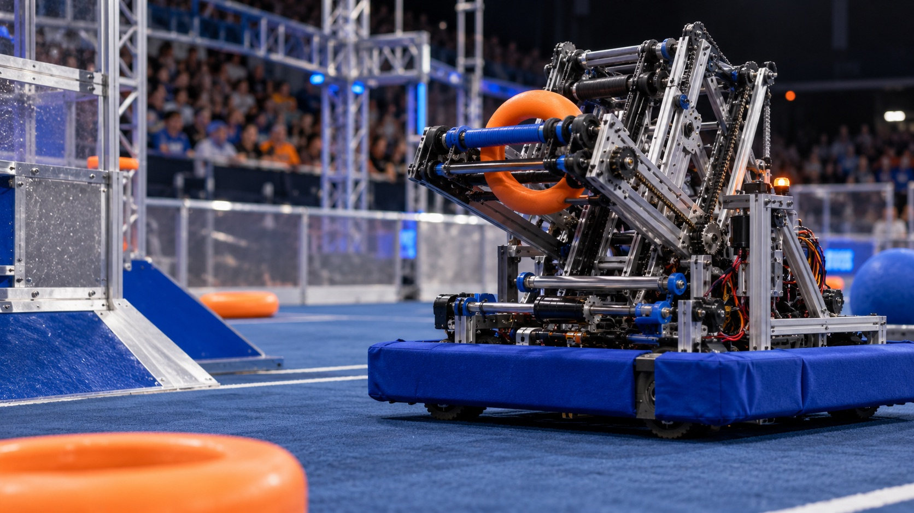
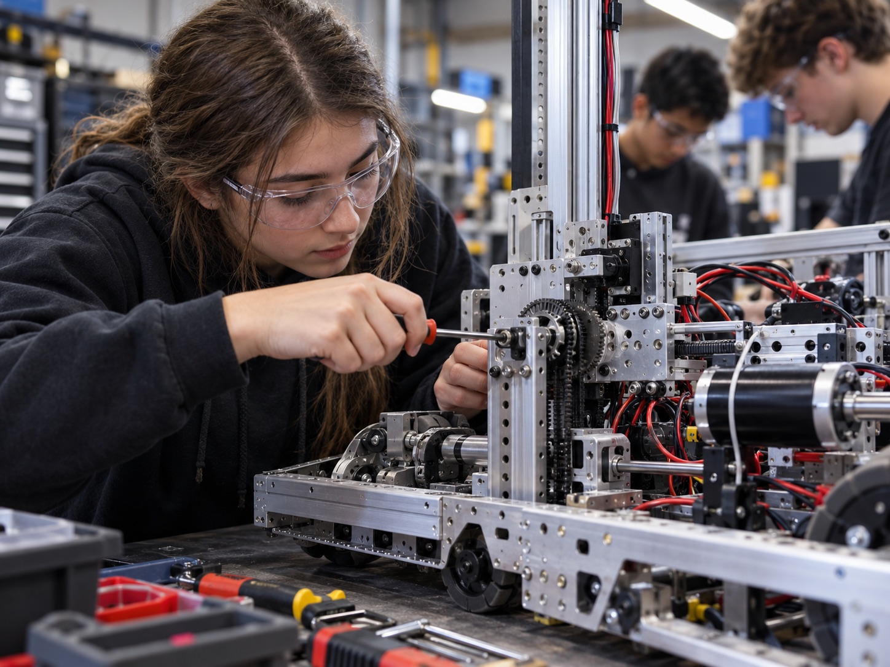
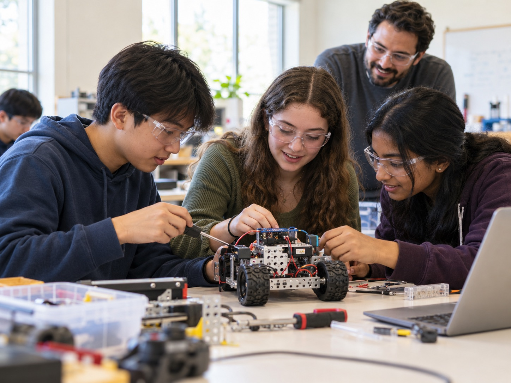

We build robots.
We build
each other.
We’re Binary Bolts, FIRST Robotics Competition Team 8570. We bring students together to design, build, program, and learn through robotics.
Meet the teamPeople
Possibilities

8570 / BUILD SEASON
More than
robots.
FIRST is where science, technology, engineering, and math meet creativity and teamwork. As Team 8570, we take on each challenge together—learning by making, testing, and improving.
Find your placeIdeas
take shape.
Every season brings a new game and a fresh engineering problem. Our robot archive is where we’ll share the designs, decisions, and lessons behind each build.
Explore our robots
Robot archive coming together
Add each
season’s robot name, game, and build highlights here.
Building
beyond the field.
Robotics can open doors. This space is for the workshops, demonstrations, mentoring, and community events where your team shares what it learns.
See our outreach
Outreach stories
Add event names, dates,
partners, and photos to make this section yours.
A continuing story.
Each season adds something to the story: a new challenge, a better idea, and more people who know they can build.
- First ideasCuriosity starts the build
- Building solutionsDesign, test, improve
- Stronger togetherShare what we learn
- What’s nextMake room for new voices
Different skills.
Same mission.
Designing, building, programming, strategy, media, organization, or outreach—there’s more than one way to contribute to a robotics team.
Join our teamHelp make the next build possible.
Interested in supporting student STEM? We’ll add Team 8570’s verified contact details here.
TEAM CONTACT DETAILS TO BE ADDED